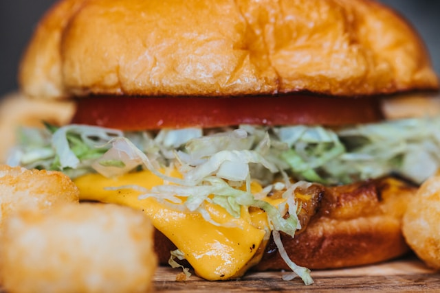

Cheeseburger

A cheeseburger is a quintessential American comfort food that consists of a juicy beef patty, melted cheese, and a variety of toppings, all sandwiched between a soft bun. The beef patty is typically seasoned and grilled to perfection, providing a savory, slightly charred flavor. Melted cheese, such as American, cheddar, or Swiss, adds a creamy and rich element that complements the meat. Common toppings include crisp lettuce, ripe tomatoes, tangy pickles, and sliced onions, along with condiments like ketchup, mustard, and mayonnaise. The soft, toasted bun holds everything together, offering a satisfying contrast in texture. Whether enjoyed at a backyard barbecue, a diner, or a fast-food restaurant, the cheeseburger is beloved for its simplicity, versatility, and deliciousness.
Making a cheeseburger starts with preparing the beef patties. Begin by mixing ground beef with salt, pepper, and any desired seasonings, then shape the mixture into patties, typically about 1/2 inch thick. Heat a grill or skillet over medium-high heat and cook the patties for about 4-5 minutes on each side, or until they reach your preferred level of doneness. Just before the patties are fully cooked, place a slice of cheese—such as American, cheddar, or Swiss—on each patty and allow it to melt. Meanwhile, prepare your burger toppings: wash and dry fresh lettuce leaves, slice ripe tomatoes, pickles, and onions, and set out condiments like ketchup, mustard, and mayonnaise.
To assemble the cheeseburgers, start by lightly toasting the buns on the grill or in a toaster. Place the cooked patty with melted cheese on the bottom half of each bun. Add your preferred toppings, layering lettuce, tomato, pickles, and onions for a classic combination. Spread condiments on the top half of the bun to taste. Once assembled, press the top bun onto the stack, slightly squishing the layers together to hold everything in place. Serve the cheeseburgers immediately, enjoying the perfect balance of juicy meat, creamy cheese, fresh vegetables, and flavorful condiments, all encased in a soft, toasted bun.
Ingredients:
-
Beef Patties
- 1 pound (450 grams) ground beef (80/20 lean-to-fat ratio)
- Salt and pepper to taste
- Optional seasonings (e.g., garlic powder, onion powder, Worcestershire sauce)
-
Cheese
- 4 slices of cheese (American, cheddar, Swiss, or your choice)
-
Buns
- 4 hamburger buns, sliced
- Butter or oil for toasting the buns
-
Toppings
- Fresh lettuce leaves
- 1-2 ripe tomatoes, sliced
- Pickles, sliced
- 1 small onion, sliced (red or white)
- Fresh lettuce leaves
-
Condiments
- Ketchup
- Mustard
- Mayonnaise
- 1 small onion, sliced (red or white)
- Optional: barbecue sauce, hot sauce
-
Optional Additions
- 1/2 teaspoon garlic powder (for patties)
- 1/2 teaspoon onion powder (for patties)
- 1 tablespoon Worcestershire sauce (for patties)
Let's make it now!
-
Step 1: Prepare the Beef Patties
- Mix the Ingredients: In a large bowl, combine 1 pound of ground beef with salt, pepper, and any optional seasonings like garlic powder, onion powder, or Worcestershire sauce.
- Form the Patties: Divide the mixture into 4 equal portions and shape each portion into a patty about 1/2 inch thick. Make a small indentation in the center of each patty to help them cook evenly.
-
Step 2: Cook the Beef Patties
- Heat the Grill or Skillet: Preheat your grill to medium-high heat, or heat a large skillet over medium-high heat on the stovetop.
- Cook the Patties: Place the patties on the grill or in the skillet. Cook for about 4-5 minutes on each side, or until they reach your desired level of doneness.
- Add the Cheese: About 1 minute before the patties are done, place a slice of cheese on each patty. Close the grill lid or cover the skillet to melt the cheese.
-
Step 3: Prepare the Buns and Toppings
- Toast the Buns: Lightly butter the cut sides of the hamburger buns. Place them on the grill or in a toaster and toast until golden brown.
- Prepare the Toppings: Wash and dry the lettuce leaves. Slice the tomatoes, pickles, and onions. Set out any additional toppings you like, such as avocado or cooked bacon.
-
Step 4: Assemble the Cheeseburgers
- Layer the Ingredients: Place the cooked patty with melted cheese on the bottom half of each toasted bun.
- Add Toppings:Layer fresh lettuce, tomato slices, pickles, and onions on top of the patty. Add any other desired toppings.
- Add Condiments:Spread condiments like ketchup, mustard, and mayonnaise on the top half of the bun to taste.
- Complete the Burger:Place the top half of the bun over the assembled ingredients, gently pressing down to hold everything in place.
-
Step 5: Serve and Enjoy
- Serve Immediately: Serve the cheeseburgers immediately while they’re hot and fresh.
- Enjoy: Enjoy your delicious homemade cheeseburgers with your favorite side dishes, such as fries, coleslaw, or a fresh salad.